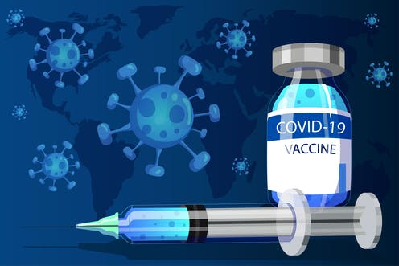
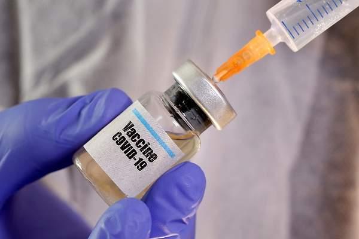
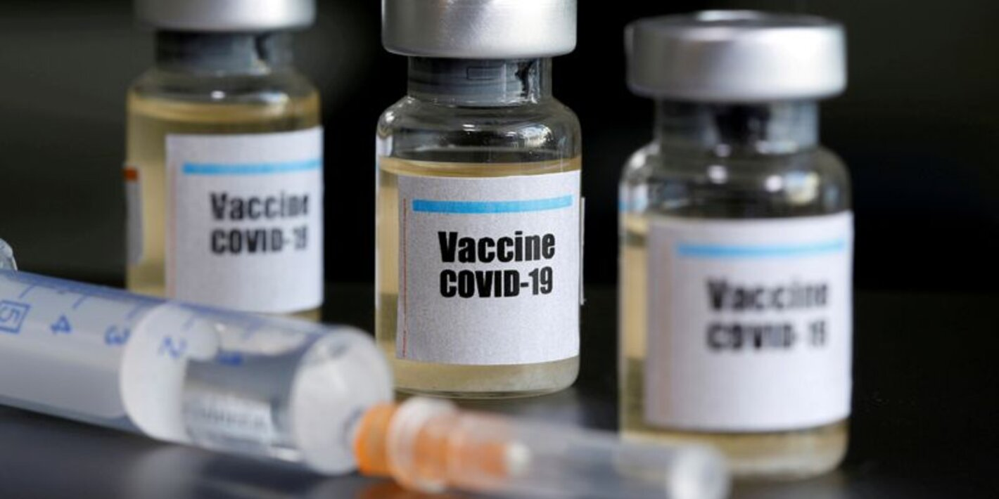

Vacuna en Colombia
Teniendo en cuenta , en Colombia y algunos países de como Argentina, Chile y Brasil tendrian las vacunas durante los primeros meses de este año. Según el calendariode vacunación, entre diciembre y enero de 2021 estarían llegando 20 millones de dosis
este martes, el Gobierno dio a conocer las dosis proyectadas de vacunas de coronavirus que se tendrán este año, de manera tentativa, por que son diferentes compañías y se está sujeto a sus entregas.este martes, el Gobierno dio a conocer las dosis proyectadas de vacunas de coronavirus que se tendrán este año, de manera tentativa, por que son diferentes compañías y a sus entregas.
